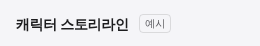
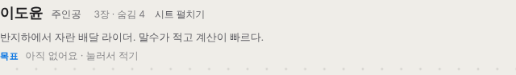
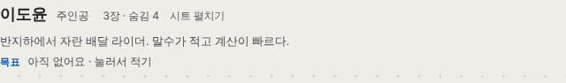
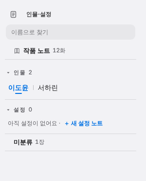
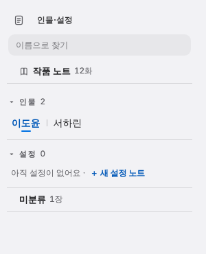
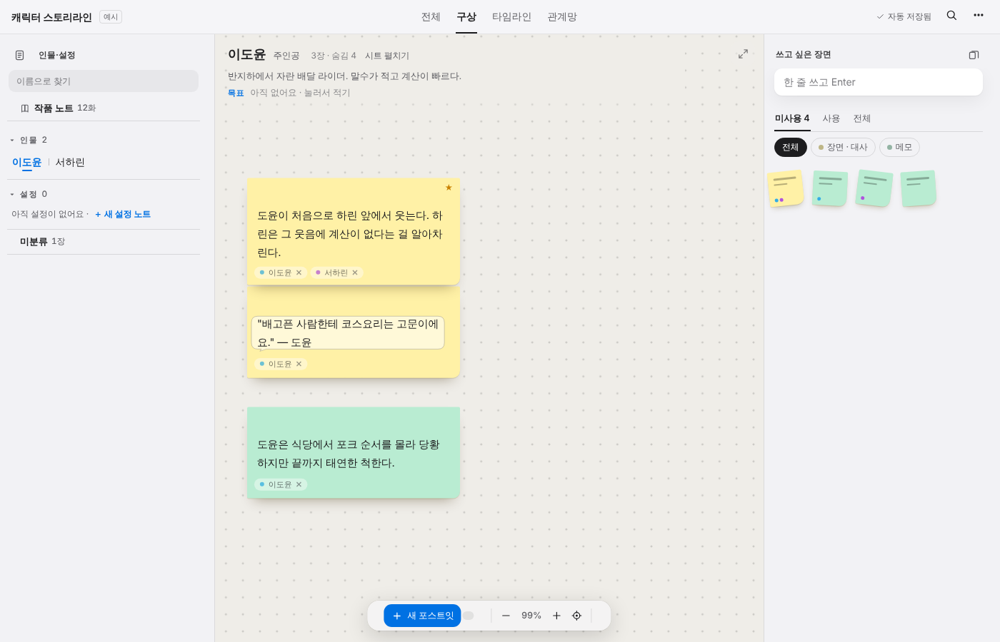

impeccable 4.8.0의 검사기(npx impeccable detect)를 실제 앱(예시 작품, 1400×900, 기본 테마)에 돌리고, 걸린 것만 고친 화면이에요.
impeccable은 앱에 들어가는 코드가 아니에요. Claude가 화면을 고칠 때 쓰는 도구라서, 설치만 해서는 앱이 바뀌지 않고 Claude가 고칠 때 이 기준을 따르게 돼요.
고치기 전경고 7건(대비 부족 6 · 작은 글자 1)
고친 뒤0건(다시 검사해서 확인)
1 · 위쪽 “예시” 표시: 10.4px → 11px
지금

impeccable 적용
누를 수 있는 글자는 11px보다 작으면 안 된다는 기준이에요. 고해상도 화면이나 작은 창에서 읽기 어려워져요.
2 · 인물 머리글: 회색 글자 대비 3.0~3.9 → 4.5 이상
지금

impeccable 적용

“주인공” · 한 줄 소개: 3.9:1 → 4.5:1 이상 (회색을 조금 진하게)
“3장 · 숨김 4”: 흐림(opacity .75)을 빼고 3.3:1 → 4.5:1 이상
“아직 없어요 · 눌러서 적기”: 3.0:1 → 4.5:1 이상
파란 “목표”: 3.8:1 → 조금 더 짙은 파랑(#0058b8)
베이지 코르크 바탕 위라서 같은 회색도 흰 바탕보다 더 흐려 보였던 게 원인이에요.
3 · 왼쪽 목록: 파란 글자 대비
지금

impeccable 적용

고른 인물 이름(이도윤) · “＋ 새 설정 노트”: 회색 바탕 위 파랑 4.2:1 → 짙은 파랑으로 4.5:1 이상
4 · 전체 화면
지금

impeccable 적용
레이아웃 · 색 테마 · 기능은 그대로예요. 검사기는 “읽히는가”만 손봐요.
5 · 검사기가 짚었지만 고치지 않은 것
짚은 것
판단
카드 한쪽에 굵은 색 띠 polish.css:187 (별 붙은 카드)
코드에는 있는데 새 디자인(ui3)이 덮어써서 화면에는 안 보여요. 지워도 되는 죽은 규칙이에요.
카드 한쪽에 굵은 색 띠 branch.css:23
카드 띠가 아니라 갈래를 잇는 가지 선이에요. 오탐이라 이 파일만 규칙을 꺼요.
줄무늬 배경 themes.css (인덱스카드 · 스프링 노트 모양)
실제 줄공책 · 인덱스카드를 본뜬 질감이라 이 앱에서는 의도한 디자인이에요. 그대로 둬요.
6 · /impeccable critique를 돌리면 더 짚을 만한 것 (예상)
⑂ · ✕ · ★ 같은 글자 기호를 아이콘으로 쓰는 것 → 한 가지 굵기의 선 아이콘으로 통일하라는 규칙이 있어요.
기본 · 다크 · 미드나잇 · 로즈 등 테마가 10개라 같은 대비 검사를 테마마다 해야 해요(이번 시안은 기본 테마만).
이 부분은 검사기 결과가 아니라 impeccable 규칙집을 읽고 예상한 거예요. 실제 critique는 점수와 우선순위(P0~P3)를 매겨 줘요.